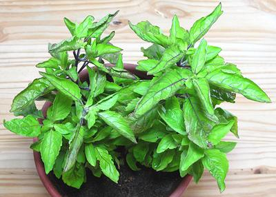

[Tulsi, Tulasi (india); Surasa (Sanskrit); Krapao (Thai); Hot Basil, Humong Basil (California Markets); Ocimum sanctum alt O. tenuiflorum (Mint family)]
In India Holy basils are highly revered, used for religious purposes and in Ayurvedic medicine. In Thailand they are used as a culinary herb, but unlike other basils, are always cooked, not used raw or just warmed. The terms Holy Basil and Tulsi are quite confusing as there are a number of rather different varieties, green (white), purple and in between. Unlike other basils the leaf margins can be strongly serrated, the leaves slightly fuzzy and the stems definitely fuzzy. They have very poor keeping qualities. The slightly rumpled photo specimens were purchased from a large Asian market in Los Angeles.
The three "recognized" varieties are Krishna (mostly to all purple), Vana, Sri or Lakshmi (green) and Rama (green with purple stems and veins). Rama, an annual, is the one most commonly found from herb vendors in North America. Vana (green) which grows wild in Southeast Asia is the one used in Thai cuisine.
 The photo to the left is of Rama basil, purchased from an herb vendor at a farmer's market in Los Angeles. This variety is used mainly as a tea for therapeutic purposes. I see no reason it couldn't be used in cooking and have done so, but it isn't the kind found in Southeast Asia, and they don't use this sacred herb for for culinary purposes in India.
More on Basils.